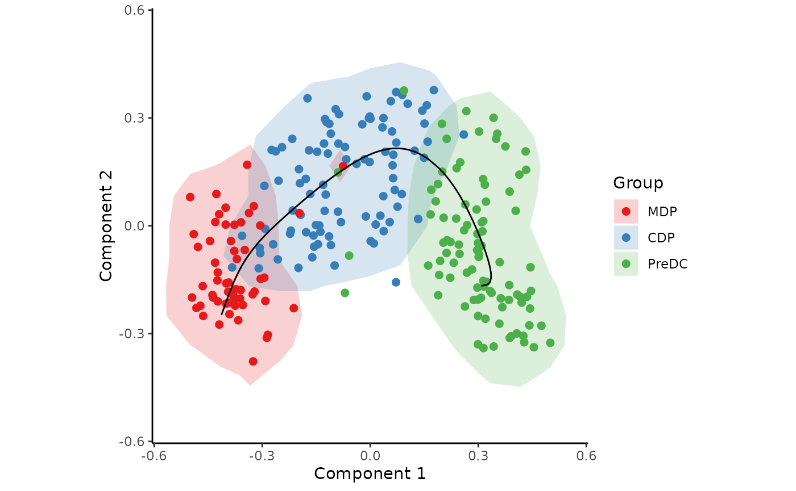
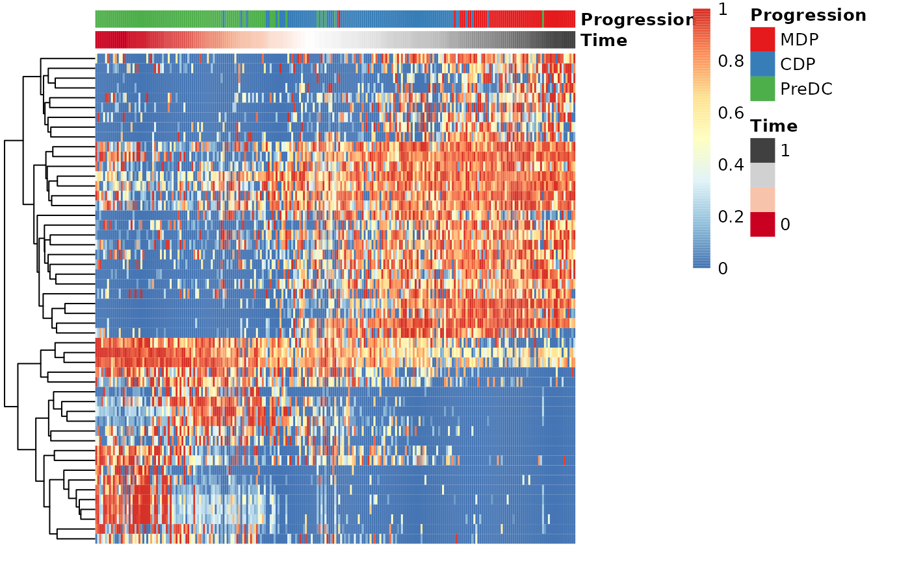
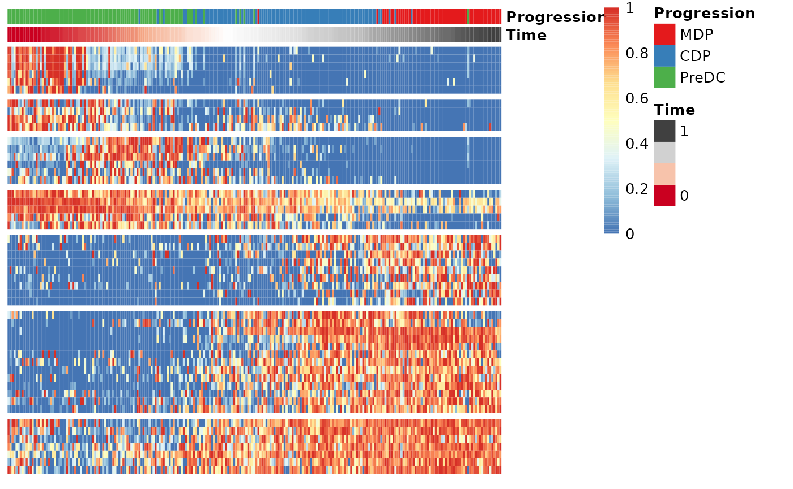

Running SCOPIUS on an AnnData object
Robrecht Cannoodt
2019-01-12
Source:vignettes/anndata.Rmd
anndata.RmdThis vignette assumes that you have a v object at the ready. As an
example, we create one from the ginhoux dataset containing
248 dendritic cell progenitors.
library(SCORPIUS)
library(anndata)
data(ginhoux)
adata <- AnnData(
X = ginhoux$expression,
obs = ginhoux$sample_info
)
# short hand notation
group_name <- adata$obs[["group_name"]]
adata## AnnData object with n_obs × n_vars = 245 × 2000
## obs: 'group_name'Reduce dimensionality of the dataset
SCORPIUS uses Torgerson multi-dimensional scaling to reduce the dataset to three dimensions. This technique attempts to place the cells in a space such that the distance between any two points in that space approximates the original distance between the two cells as well as possible.
The distance between any two samples is defined as their correlation
distance, namely 1 - (cor(x, y)+1)/2. The reduced space is
constructed as follows:
space <- reduce_dimensionality(adata$X, dist = "spearman", ndim = 3)The new space is a matrix that can be visualised with or without colouring of the different cell types.
draw_trajectory_plot(
space,
progression_group = group_name,
contour = TRUE
)Inferring a trajectory through the cells
The main goal of SCORPIUS is to infer a trajectory through the cells, and orden the cells according to the inferred timeline.
SCORPIUS infers a trajectory through several intermediate steps, which are all executed as follows:
traj <- infer_trajectory(space)The result is a list containing the final trajectory
path and the inferred timeline for each sample
time.
The trajectory can be visualised with respect to the samples by
passing it to draw_trajectory_plot:
draw_trajectory_plot(
space,
progression_group = group_name,
path = traj$path,
contour = TRUE
)
Finding candidate marker genes
We search for genes whose expression is seems to be a function of the trajectory timeline that was inferred, as such genes might be good candidate marker genes for dendritic cell maturation.
gimp <- gene_importances(adata$X, traj$time, num_permutations = 0, num_threads = 8)
gene_sel <- gimp[1:50,]
expr_sel <- adata$X[,gene_sel$gene]To visualise the expression of the selected genes, use the
draw_trajectory_heatmap function.
draw_trajectory_heatmap(expr_sel, traj$time, group_name)
Finally, these genes can also be grouped into modules as follows:
modules <- extract_modules(scale_quantile(expr_sel), traj$time, verbose = FALSE)
draw_trajectory_heatmap(expr_sel, traj$time, group_name, modules)
Store outputs in AnnData
adata$obsm[["X_mds"]] <- space
adata$uns[["trajectory_path"]] <- traj$path
adata$obs[["trajectory_pseudotime"]] <- traj$time
adata$var[["trajectory_importance"]] <- gimp[match(adata$var_names, gimp$gene), ]$importance
adata## AnnData object with n_obs × n_vars = 245 × 2000
## obs: 'group_name', 'trajectory_pseudotime'
## var: 'trajectory_importance'
## uns: 'trajectory_path'
## obsm: 'X_mds'